CommCare
Why GiveDirectly switched to CommCare to support their Cash Transfer Programs
How a leading humanitarian organization migrated seven countries from TaroWorks to CommCare, cutting project launch times from weeks to days.
Expert perspectives on digital health, frontline technology, and global social impact from the Dimagi team.
How a leading humanitarian organization migrated seven countries from TaroWorks to CommCare, cutting project launch times from weeks to days.

How MiracleFeet scaled clubfoot treatment from 180 to over 500 clinics by automating its CommCare-to-Salesforce data pipeline, saving more than 22,000 staff hours a year.

How Dimagi built a machine-learning model to help frontline workers in India predict child malnutrition before it happens, and what it means for prevention-first public health.

Beyond monitoring and evaluation: how partners are extending CommCare into asset tracking, fleet management, and internal logistics to do more with leaner budgets.

Learn how Connect KMC bridges the gap in newborn health. We combine digital innovation with Kangaroo Mother Care to deliver life-saving support at home.

Dimagi returns to the Global Digital Health Forum to connect with partners, share insights, and shape innovations driving the future of digital health.

Explore key takeaways from the Fall 2025 “What’s New in CommCare” webinar from Smart Performance Alerts to AI-powered tools for leaner teams.

Discover how case management in CommCare can enhance frontline service delivery. Get the new free course, now available on the Dimagi Academy.

CommCare EU Cloud launches in Ireland, joining India and US hosting options. Choose your data location with identical features, pricing, and security.

Explore Dimagi’s perspectives on the UNICEF Digital Tool Selection Guidebook for Health Campaigns that recognizes CommCare as a leading tool.

Discover how Somerville's public health workers use CommCare to streamline workflows, improve data sharing, and deliver better care.

How 20 years of savings-group data in Burundi, and real-time CommCare data in Kenya, reveal what truly sustainable, community-owned impact looks like.

How Volunteers of America equipped its Community Health Worker workforce with CommCare to address social determinants of health at scale across four US states.

In partnership with WHO and the Bill & Melinda Gates Foundation, CommCare digitized last-mile worker payments for polio and routine immunization campaigns across 16 countries, cutting payment timelines from months to days and reaching some 2 million frontline health workers.

Harnessing AI to empower frontline workers with smarter tools, improving efficiency, decision-making, and impact in global health and beyond.

As USAID restructuring reshapes global development, here’s how Dimagi is supporting partners, from a more affordable CommCare Standard Plan to letters of support and free training.

A look back at Dimagi’s 2024: 173,638 CommCare users, SureAdhere’s 800,000th video, government partnerships across Africa, and impact from global to local.

From a 2009 research project at UC San Diego to a globally recognized tool for tuberculosis treatment adherence, this is the story of SureAdhere, now part of Dimagi.
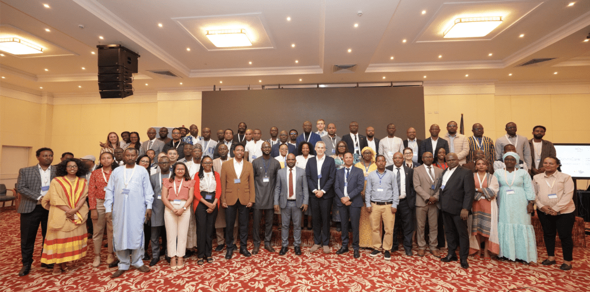
In October 2024, Dimagi hosted its first CommCare Government Summit in Addis Ababa, bringing 64 health leaders from 11 countries together to scale digital health across Africa.

Dimagi is presenting across eight sessions at GDHF 2024, on the frontiers of AI in global health, improving frontline jobs, and scaling mental health care.

USAID DIV has awarded Dimagi a grant to scale and evaluate CommCare Connect, delivering Vitamin A and ORS to children under five in northern Nigeria.

How MiracleFeet uses CommCare and the Impact Delivery approach to scale low-cost clubfoot treatment, reaching nearly 100,000 children across 36 countries.

Key milestones for CommCare Connect, strengthening the pillars of digital learning, verification, and payments to Frontline Workers in LMICs.
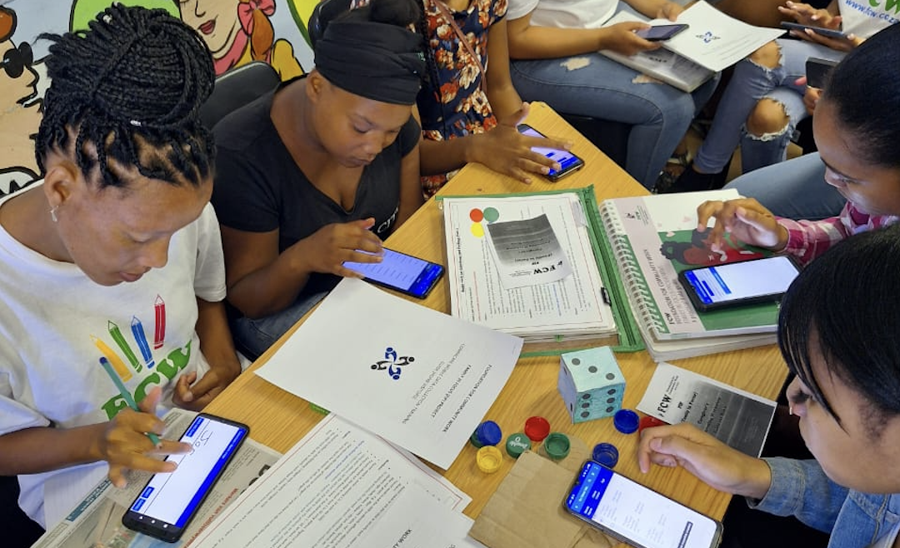
The Foundation for Community Work (FCW) chose CommCare to digitize its out-of-center early childhood development program, equipping home visitors in South Africa to streamline service delivery and track real impact for children and families.
Join Dimagi at the ICT4D Conference 2024 in Accra, Ghana. Sign up for our Advanced CommCare Training and connect with our team on digital development.

One year after launching the first CommCare Grant for Frontline Research, we share insights from first-place winner Move Up Global, whose study in rural Rwanda targets neglected tropical diseases and malnutrition among school-aged children.
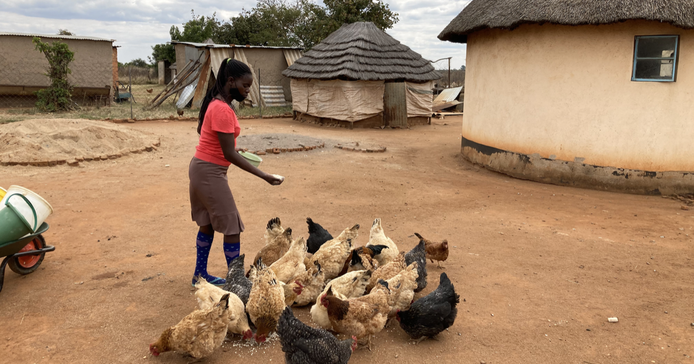
Learn how the World Poultry Foundation addressed challenges in collecting real-time data from the field, and explore their journey to find an affordable, sustainable mobile digital solution built on CommCare.

A Dimagi design contractor shares how empathy and the five stages of design thinking shape user-centered solutions, from a rural-artisan e-commerce app to everyday products.

Reflections and early learnings from the 2023 design and testing of CommCare Connect, Dimagi's platform that lets Frontline Workers learn, deliver, verify, and get paid for essential services.
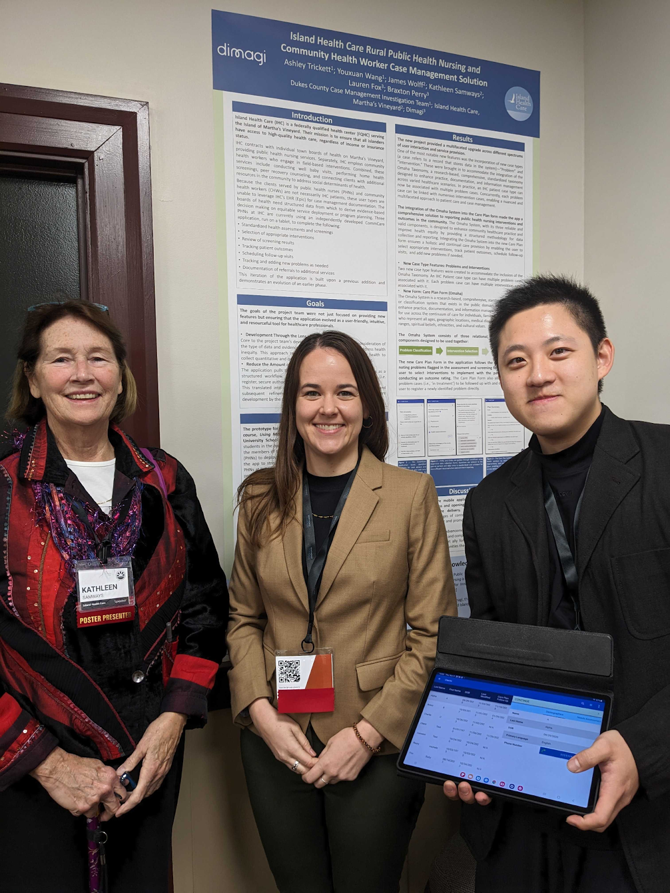
Dimagi empowers community health workers to provide top-quality care to the most vulnerable residents of Martha’s Vineyard.

In September 2023, Dimagi hosted its Inaugural CommCare Enterprise Summit in Washington D.C., where 14 of 16 Enterprise Partners reaching a collective 1.2 billion people gathered to share challenges and expertise.

A Q3 progress update on WellMe, Dimagi's resilience-building app for Frontline Workers, covering pilot projects in India and Nigeria, a beta testing program, and key feedback from health workers.
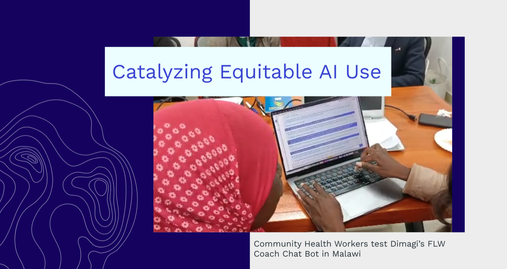
Dimagi is a winner of a Grand Challenges grant funded by the Gates Foundation. Led by Dr. Neal Lesh, the team will build an LLM-powered coach to support and supervise frontline workers.

Learn more about Dimagi’s first-ever CommCare Enterprise Summit, taking place from September 19 to 21 in Washington DC and hosting 16 of our software as a service (SaaS) CommCare Enterprise partners.
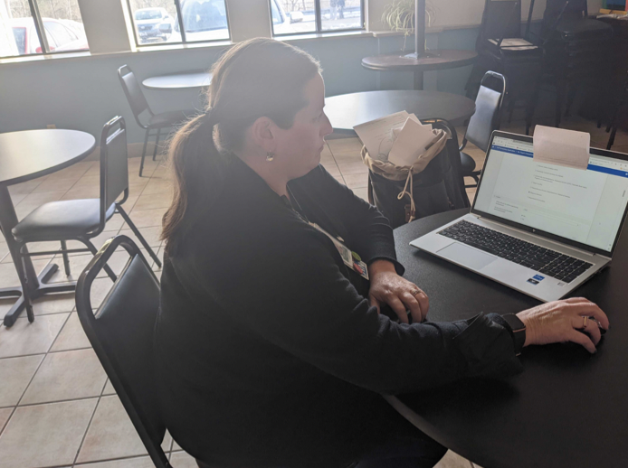
How the CommCare Transitional Housing care coordination solution helped Vermont prove that the right technology, combined with targeted efforts, can make an outsize, positive impact on housing insecurity.
BAO Systems and Dimagi announce a partnership to support communities connecting CommCare and DHIS2, streamlining data flow from collection to integration to analysis and use.

Learn more about the work Dimagi is doing to contribute to the equitable use of large language models as part of our overall mission to foster impactful, equitable, robust, and scalable digital solutions.
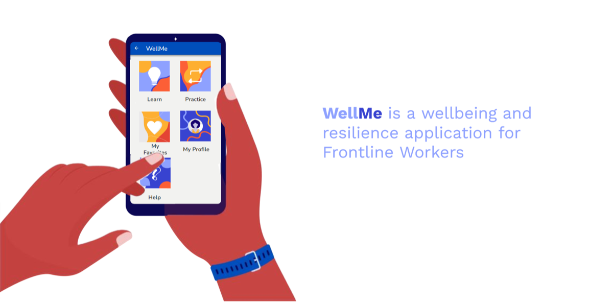
WellMe is a wellbeing and resilience application designed to promote resilience-building behaviors and prevent burnout among Frontline Workers. Dimagi outlines its theory of change and a plan to pilot the platform with 1,200 Frontline Workers.
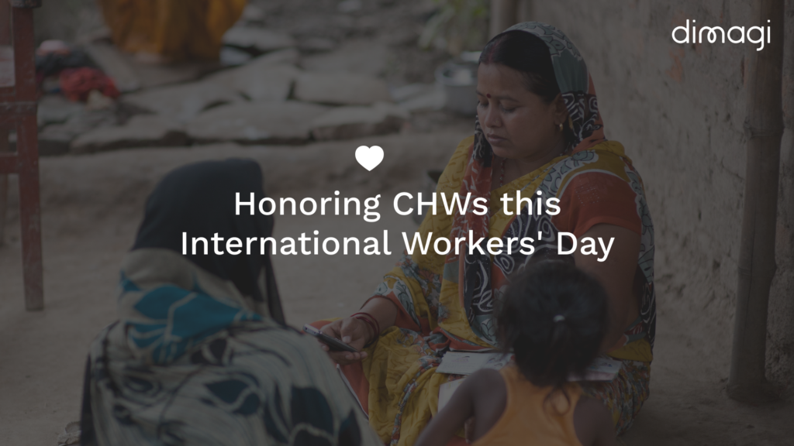
On International Workers' Day, Dimagi recognizes and supports community health workers through CommCare, advocating for better working conditions and workers' rights to strengthen community health systems and improve health outcomes.

Learn more about our CommCare Research grant awardees and the work they have been doing as we share key insights from their first-hand experience with frontline research, digital data collection, and the realities of managing an NGO.
CommCare brings digital health to life in university classrooms around the world, equipping the next generation of global health and development leaders with real-world, no-code digital skills.

On Dimagi's 20th anniversary, we reflect on Designing Under the Mango Tree, our user-centric approach of building solutions around users' contextual needs, and revisit conversations with some of the first users of CommCare.

Vermont Care Network and Vermont Care Partners are collaborating with SureAdhere by Dimagi to scale the ‘Wheels and Waves’ program, a telemedicine intervention to treat opioid use disorder across the State of Vermont.

Dimagi's tech team held its first in-person summit in four years, bringing together the team's global workforce in Tulbagh, South Africa.
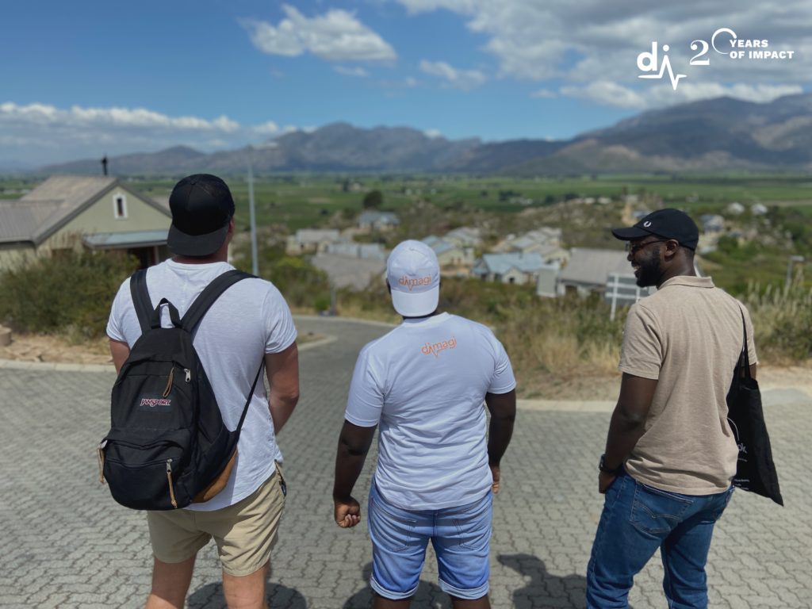
Looking back on 20 years of Impact, Team and Profit at Dimagi, and looking ahead to the next 20 years of high-impact growth.
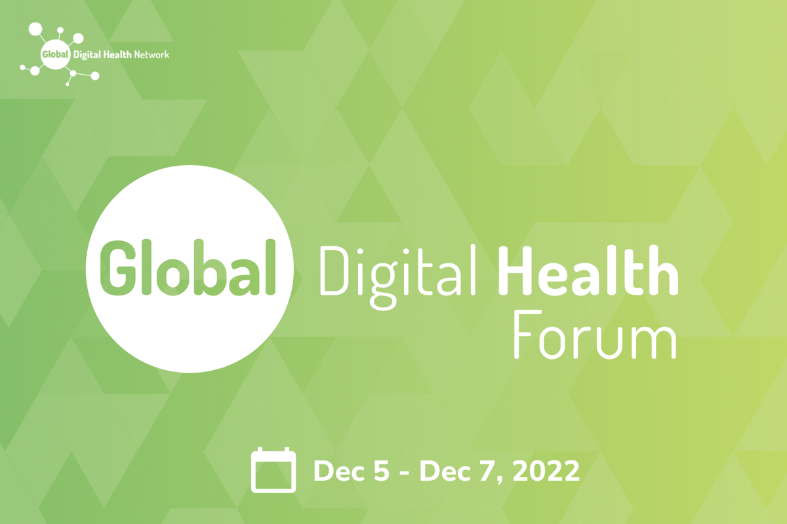
Dimagi is looking forward to a strong presence at GDHF 2022. Find out what we’ll be presenting on, and sign up for our happy hour on Monday night.

Announcing the first-ever CommCare Grant for Frontline Research. Learn more about the origins of the grant and the 2022 winners.

Why technology entrepreneurs based in low- and middle-income countries are essential to local capacity strengthening, and how Dimagi supports them through the CommCare Provider Program.

Dimagi is offering a free, pre-configured monkeypox case investigation and contact tracing solution built on CommCare to any US public health department, with six months of free CommCare Enterprise Premier.
After years of a tech golden age, companies of all sizes are experiencing widespread layoffs. Dimagi's CTO shares why, even when things seem like they are falling apart, this is a great time to transition your career into social impact.

Dimagi is launching the High-Impact Growth Podcast, a new way to share two decades of learnings about technology in global health and development.
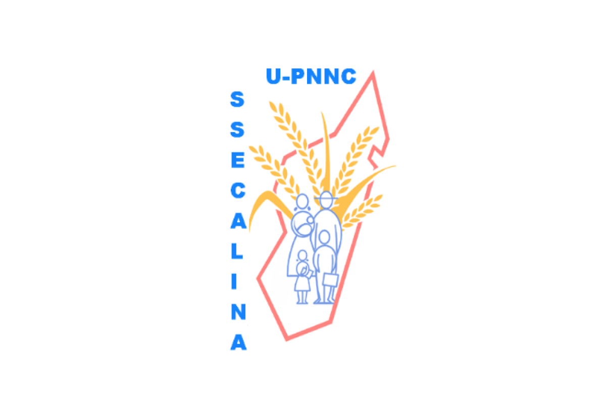
The Office of National Nutrition and the Ministry of Health in Madagascar, with World Bank funding, are working to reduce childhood stunting. Dimagi optimized the CommCare-based PARN application to support this goal.

Dimagi is building reusable digital components to help expand access to quality mental health care, with a focus on lower and middle income countries where the unmet need is greatest.
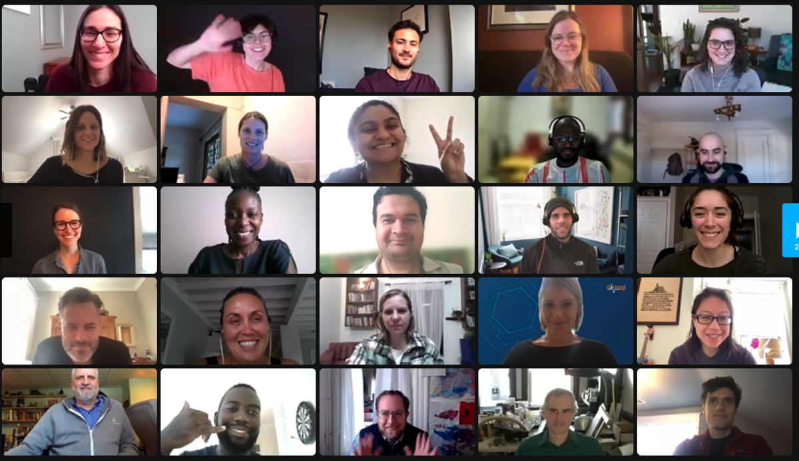
Dimagi was a hybrid organization before hybrid had a name. Jeremy Wacksman reflects on a decade of remote work and how Dimagi is intentionally designing a thriving hybrid workplace.

The COVID-19 pandemic sharply increased demand for behavioral health care while cutting the number of inpatient beds available. Here are three digital tools that can help US state governments match patients with the care they need.

Dimagi shares its five-year strategy for 2022 to 2026, built around three strategic priorities to achieve what we call High-Impact Growth.

Dimagi is partnering with Abt Associates on the USAID-funded Healthy Mother Healthy Baby project, which advances digital transformation for maternal, newborn, and child health and nutrition services in Tajikistan.

Dimagi joins the ADPP Mozambique consortium to lead digitization efforts and build DHIS2 tools that strengthen the TB Local Response across 50 districts.
Dimagi acquires SureAdhere to bolster digital solutions for Frontline Workers, enable new virtual care models, and strengthen the clinical trials digital ecosystem.
Dimagi’s CTO reflects on the log4j and Linux vulnerabilities and what recent IT security news means for Digital Development organizations.
Dimagi is partnering with the Malawi Ministry of Health to revive and transition to local ownership the proven cStock supply chain system for the community level.

The fourth in a series of regular updates, Dimagi Senior Director of New Business Shabnam Aggarwal shares learnings from the marketing and sales strategy behind FocusMDM.

Catholic Relief Services is working with Dimagi to prepare and host six full-day training sessions to help improve their ICT teams' case management and advanced app-building skills.

Dimagi has created a Prioritized Tasking Framework that aims to help CHWs focus on service delivery, enable data-driven decision making, and provide patients access to better care.
UNCDF partnered with Baobab Senegal, Corprobat, and Dimagi to pilot a digital solution for the agricultural sector, now scaling up to reach an additional 2,250 smallholder farmers.

Dimagi has officially launched its Crisis Response Corps (CRC): a team dedicated to rapidly building durable digital solutions for immediate impact in emergency and humanitarian response.

Dimagi has partnered with PATH and Digital Square to create a turnkey integration between CommCare and Fast Healthcare Interoperability Resources (FHIR), making it easier to share health data securely across systems.
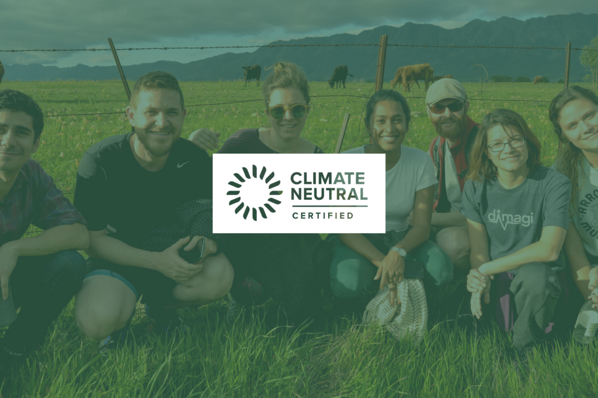
As of June 30, 2021, Dimagi is officially Climate Neutral Certified, taking responsibility for its global carbon emissions through measurement, offsets, and a reduction plan.
Dimagi, Medic, and The Rockefeller Foundation collaborated on a report exploring how investments in digital platforms for frontline workers today can help prepare for future pandemics.
In this third post in a series of regular updates, Dimagi Senior Director of New Business Shabnam Aggarwal shares what the team has learned about the sales strategy behind FocusMDM.
The next piece in our Innovation at Dimagi series highlights our team's approach to evaluating current and upcoming projects honestly and efficiently.

As the United States moves to the next stage of its pandemic response, Dimagi is working with Abt Associates and local community-based organizations to fight vaccine hesitancy in some of the country’s most vulnerable populations.

More than a year on from the release of our first template applications for COVID-19 response, a look at how our partners have been putting them to use across the globe.

In the fourth entry in our series on Innovation at Dimagi, Jon explains how and why to differentiate funding from innovative sources from true revenue.

A candid March 2021 update in Dimagi’s Building in the Open series, reflecting on the Focus mobile device management product’s sales pipeline, strategic partnerships, and the decision to keep the tool simple.

Working with EGPAF-Malawi, Dimagi is designing, developing, and testing a pilot mobile solution that will support testing of children and partners who might be at risk of HIV in Malawi.

The CDC Foundation has engaged Dimagi in a pilot of the Pregnancy Outcomes and Death Surveillance in Humanitarian and Fragile Settings (PODS) project, building a model to better understand challenges to good maternal and newborn health outcomes and to use data for evidence-based decision making.
Our Customer Success team outlines five key steps for setting up a process of continual improvement for your programs, with lessons from our partners at MiracleFeet.
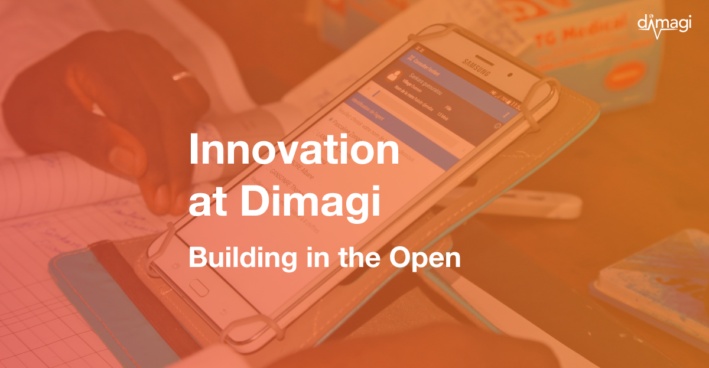
The first in a series of monthly updates, Dimagi Senior Director of New Business Shabnam Aggarwal outlines the work of the New Business team, focusing on the mobile device management platform, Focus.

In the second post in our Innovation at Dimagi series, CEO Jonathan Jackson explains how we reformed our approach to innovation and exploration at Dimagi and how it gives us greater confidence in the results of our tests.

Dimagi CEO Jonathan Jackson reflects on a year filled with uncertainty, challenges, inspiring partners, and no small amount of hard work.

As viable COVID-19 vaccines become available, the tools we use to ensure their equitable delivery will determine whether we can overcome the challenges that accompany them.

Banyan Global has partnered with Dimagi to build an SMS-based system designed to keep upwards of 2,500 youth in Honduras engaged in a program promoting employment and education resources.

To support the next phase of COVID-19 response, Dimagi is developing an open-source digital global good to track and support every client before, during, and after vaccination.

Infomovel connected more than 1,750 community health workers across seven provinces of Mozambique with CommCare, reducing loss to follow-up and aligning fragmented partners around the UNAIDS 90-90-90 targets for HIV and TB.

Dimagi CEO Jonathan Jackson shares highlights from a joint post with the COVID Response Alliance on the World Economic Forum blog, on the vital role of social entrepreneurs in the recovery from COVID-19 and the achievement of the Sustainable Development Goals.

How Malaria Consortium's upSCALE program used CommCare for integrated community case management (iCCM), helping community health workers improve child health in Mozambique.

How TechnoServe worked with Dimagi to build a suite of CommCare-based monitoring and evaluation tools that reaches nearly half a million beneficiaries across Africa and Latin America, cutting implementation time in half.

With the coronavirus continuing to spread across the continent, Dimagi is partnering directly with NGOs and ministries of health across Africa to implement CommCare for everything from workplace screening to facility readiness and contact tracing.

Originally shared on the AWS Public Sector Blog, this post highlights how Dimagi’s CommCare and Amazon Connect helped the New York State Department of Health scale up COVID-19 contact tracing.

Anne Liu, an expert on mobile tools for disease surveillance, shares her experience supporting the Government of Guinea in launching a national digital contact tracing program during the 2014 Ebola epidemic.

In a recent assessment of digital solutions for COVID-19 response, the Johns Hopkins Bloomberg School of Public Health highlighted CommCare for its existing deployments, flexibility, and ease of use.

As more countries reopen their borders, Dimagi has developed a Port of Entry Surveillance application to screen travelers for COVID-19 risk factors and symptoms at air, sea, rail, and land ports of entry.

The Healthcare Provider Training & Monitoring template application gives frontline workers responding to COVID-19 easy access to resources for education, training, risk assessment, and symptom screening.

The Facility Readiness template application supports facilities responding to COVID-19 to assess their readiness and keep track of vital stock.

To help partners rapidly set up their COVID-19 data pipelines, Dimagi built template dashboards for Excel, Power BI, and Tableau that connect to CommCare through its built-in integration features.

To support organizations coordinating COVID-19 response around the world, Dimagi is developing a collection of free template CommCare applications for the various phases of outbreak response.

Dimagi has released an application template encoding the full WHO FFX Contact Tracing and Reporting protocols, ready to deploy in minutes for COVID-19 response.

Open source tools are a critical piece of global infrastructure, and they need champions for long-term investment.

Dimagi is offering pro bono CommCare subscriptions to COVID-19 response applications through May 2021. Find out if your project qualifies and apply today.

Dimagi has been recognized for its commitment to open source software and a collaborative, impact-focused work culture, earning awards and certifications across governance, workplace, and global health.
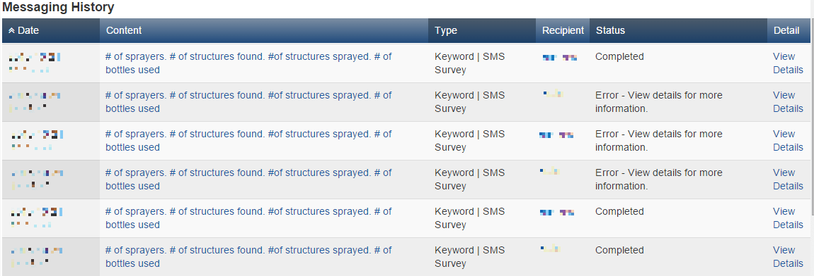
Two high-profile technology failures, the Iowa caucus app and a UN data breach in Geneva, reveal cautionary lessons for practitioners building software in the public sector and in digital development.
The Baylor College of Medicine’s Children’s Foundation Lesotho is working with Dimagi to expand a CommCare-based client tracking tool to two more districts, the final step before national deployment.

How the Naatal Mbay program built CommAgri on CommCare to register 68,000 farmers and coordinate 500 extension agents across Senegal's rice, maize, and millet value chains.

How Lwala Community Alliance reached 95% vaccination coverage across 60,000 people in western Kenya and cut child mortality from 105 to 29.5 per 1,000 live births with a custom CommCare app.

How MHP Salud used CommCare to unify 10 grant-funded health initiatives under a single app, cutting data submission time by 89% and saving more than $14,000 a year.

How Terre des hommes deployed an integrated electronic diagnostic approach on CommCare to improve the quality of frontline child healthcare across 1,132 clinics in Burkina Faso.

How TulaSalud used CommCare to improve and monitor community health in Guatemala, supporting community facilitators and strengthening maternal and child care.